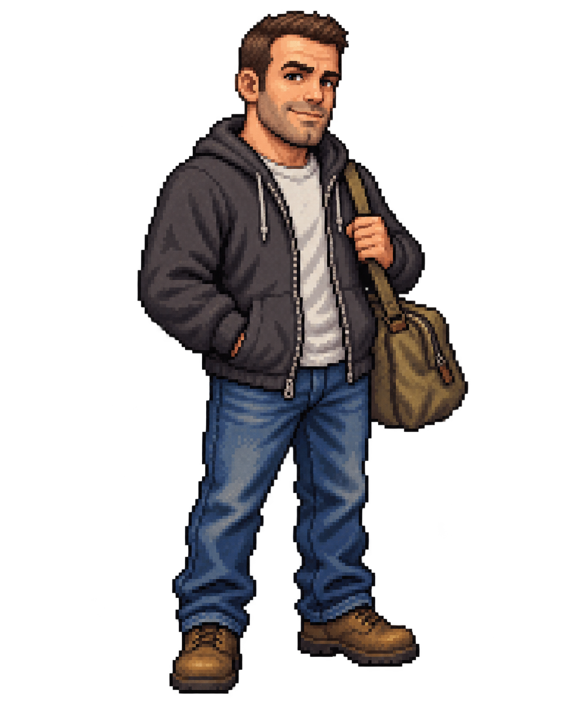
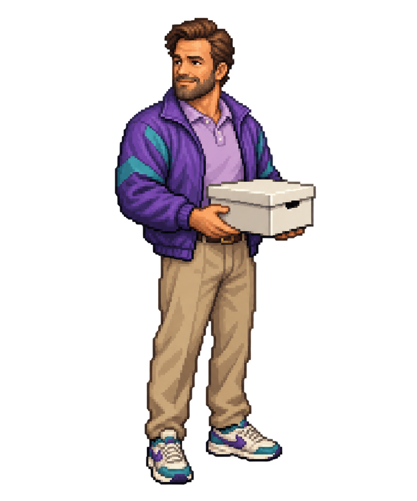
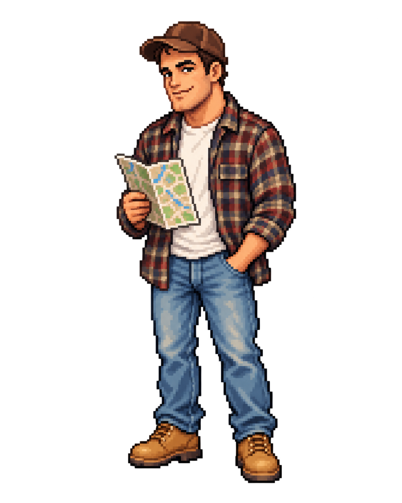
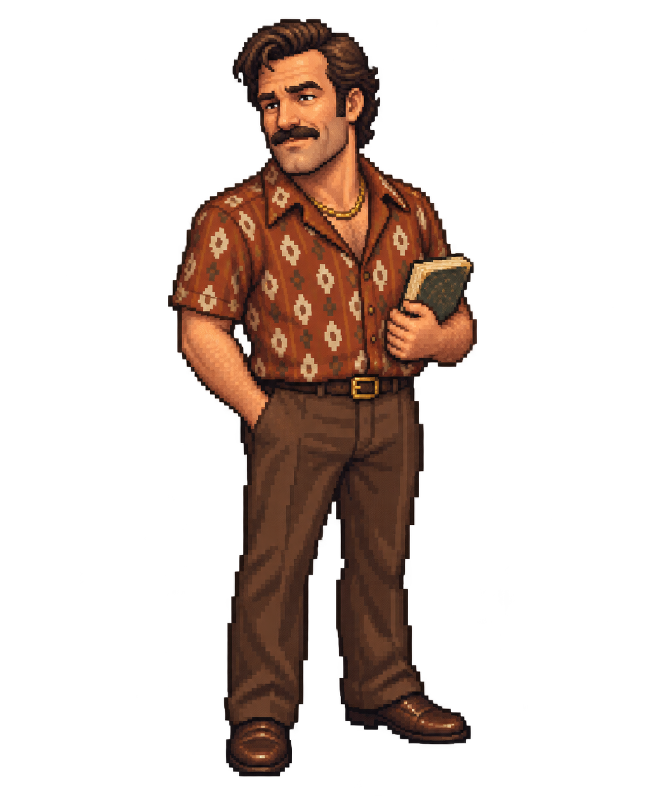
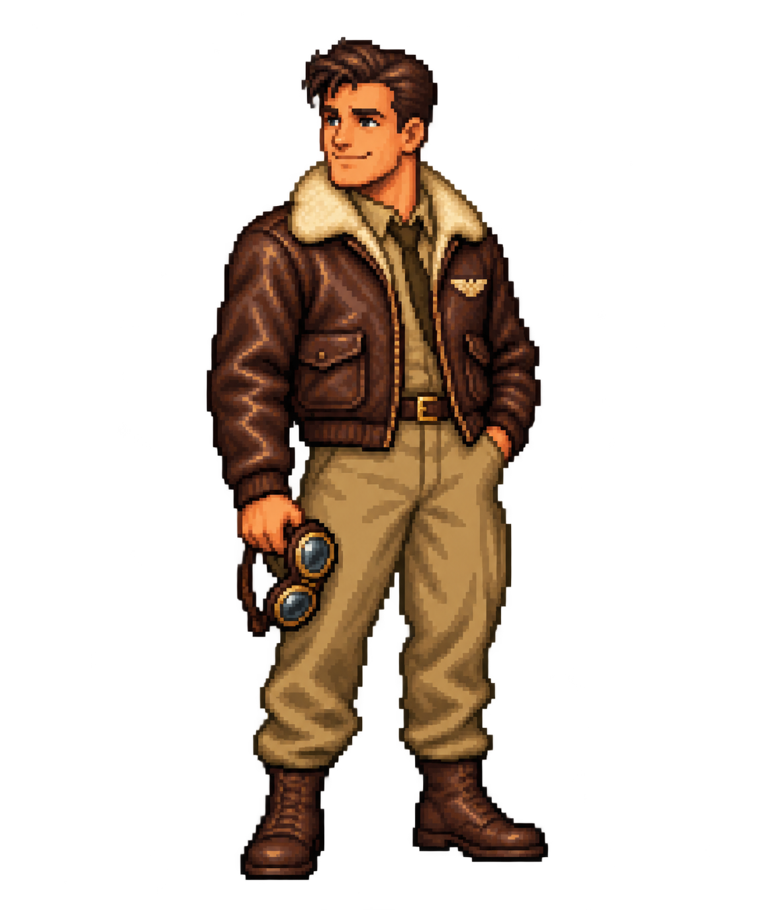
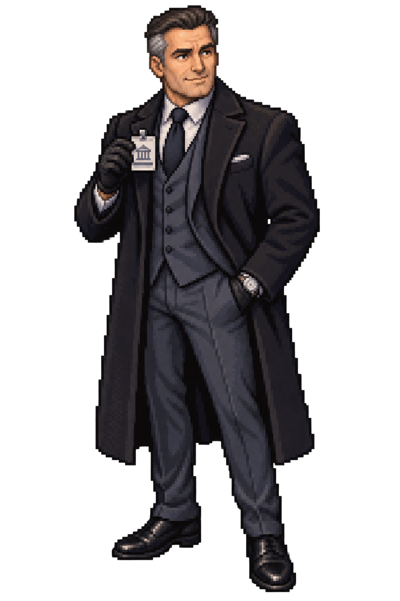
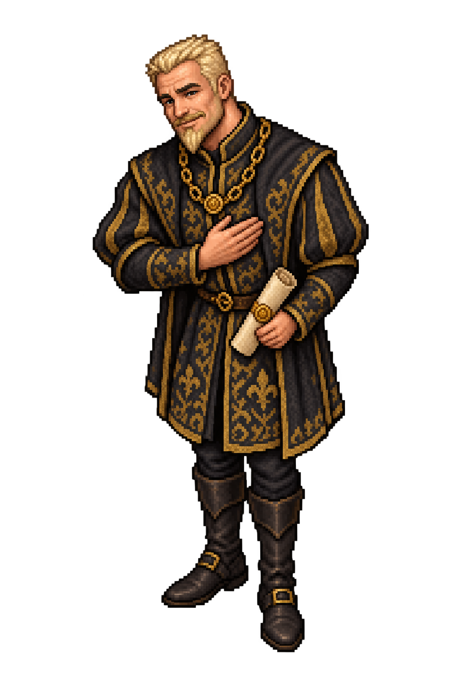
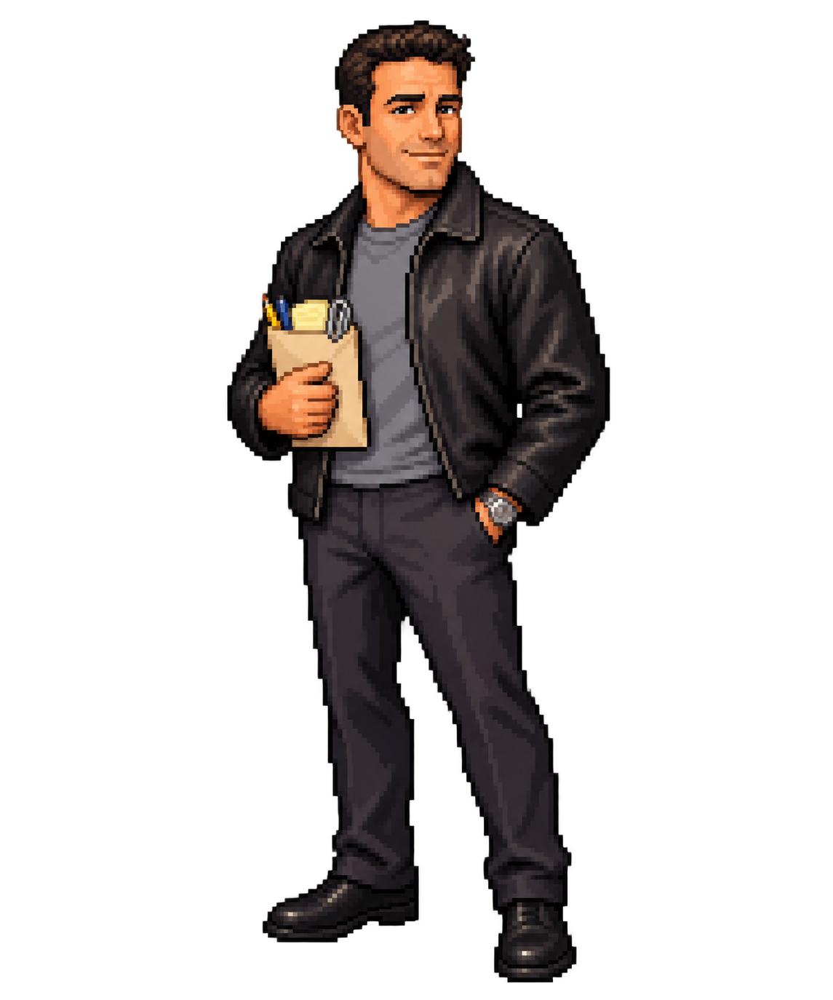
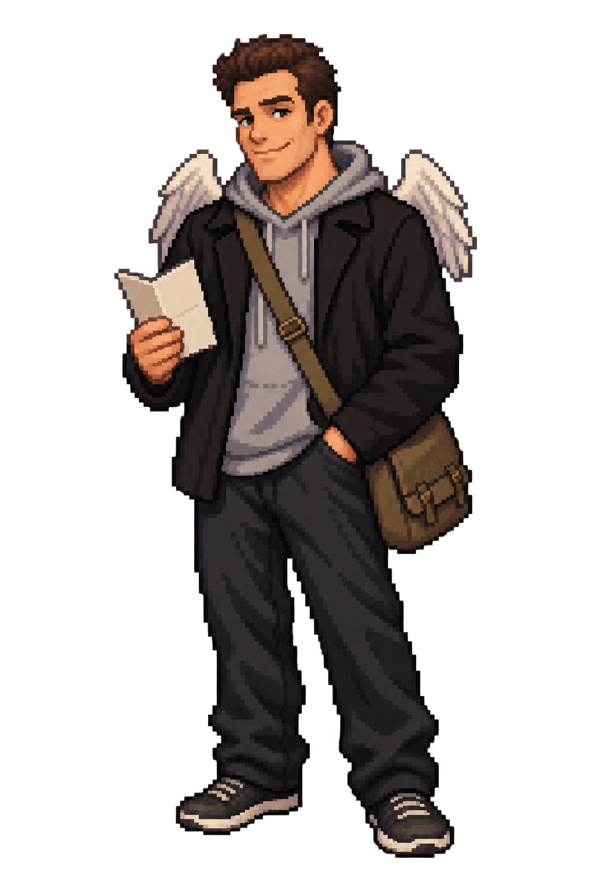

Movie-inspired disguises for the world's most politely obstructive research companion. Each concept draws on a different Ben Affleck film. All 20 disguises now appear in the outdoor game. Approach DANN-E and press B to cycle outfits, or travel to see his next disguise.
1970s rescue planner

Boston neighborhood charmer
Meticulous records specialist
Too-perfect suburban neighbor

Eccentric archive benefactor

Loyal-looking local

Bookish barroom uncle
Tired but friendly coach
Golden-age leading man
Immaculate young attorney
Press-conference statesman

Off-duty aviator
Overconfident field technician
Courteous legal consultant

Wealthy museum donor

Suspiciously gracious patron
Prohibition-era gentleman

Confident technical consultant
Overfriendly holiday volunteer

Disarmingly casual wanderer